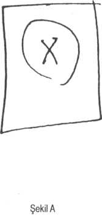
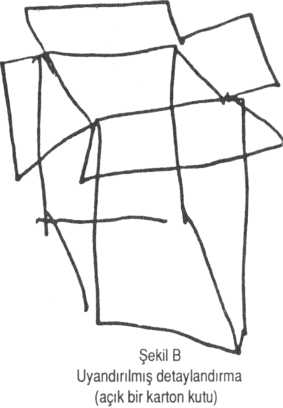

Kısa bir süre önce, kliniğimize Natasha K. adında, doksan yaşında zeki bir kadın geldi. Seksen sekiz yaşına bastığı doğum gününün ardından, bir "değişikliğin" farkına vardığını söyledi. "Ne tür bir değişiklik?" diye sorduk.
"Çok zevkli." dedi heyecanla. "Baştan sona tadını çıkardım. Daha enerjik, daha canlı ve yeniden 'genç' hissettim kendimi. Genç erkeklere ilgim arttı. Sanki kanım kaynıyordu, yerimde duramıyordum."
"Bu bir sorun muydu?"
"Hayır, ilk başta sorun değildi. Çok iyi -olağanüstü iyi- hissettim. Yaşadıklarımı, sorun olarak düşünmemi gerektirecek bir şey yoktu."
"Ve sonra?"
"Arkadaşlarım endişelenmeye başladı. Önce 'Işıl ışıl görünüyorsun. Sanki yeni bir hayata başlamış gibisin' dediler. Ama sonra bunun pek de uygun bir şey olmadığını düşünmeye başladılar. 'Her zaman çok utangaç biriydin şimdi flört ediyorsun. Cıvıl cıvılsın, fıkralar anlatıyorsun. Senin yaşında biri için bu normal mi?' dediler."
"Peki sen nasıl hissettin?"
"Şaşkına döndüm. Bu kadar zamandır bunları yaşıyordum ama 'ne oluyor' sorusunu hiç düşünmemiştim. Sonra düşünmeye başladım. Kendime, bak Natasha, seksen dokuz yaşındasın ve bir senedir bu durumu yaşıyorsun. Her zaman duygusal olarak soğukkanlı ve kontrollüydün, şimdiyse bu aşırılıklar içindesin! Sen yaşamının sonuna yaklaşmakta olan yaşlı bir kadınsın. Bu ani öforiyi açıklayabilecek ne gibi bir sebep olabilir ki? dedim. Öforiyi düşünür düşünmez yaşadığım şeylerin özelliği değişti...."
" 'Sen hastasın, canım. O kadar iyi hissediyorsun ki hasta olmalısın!' dedim kendi kendime."
"Hasta mı? Duygusal olarak mı; zihinsel olarak mı?"
"Hayır, duygusal olarak değil, fiziksel olarak hasta. Beni bu kadar uçuran bedenimin, beynimin içindeki bir şey olmalıydı.' Sonra Allah kahretsin bu Cupid hastalığı diye düşündüm.
"Cupid hastalığı mı?" diye hiçbir şey anlamadan tekrarladım. Bu terimi daha önce hiç duymamıştım. "Evet Cupid hastalığı -bildiğiniz sifilis (frengi) yaklaşık yetmiş yıl önce Selanik'te bir genelevdeydim. Frengi'ye yakalandım - kızların çoğunda vardı - biz Cupid hastalığı derdik. Kocam beni oradan kurtardı, hastalığımı tedavi ettirdi. Tabii, bu olay penisilinin bulunuşundan yıllar önceydi. Bu kadar sene sonra yine beni etkisi altına almış olabilir mi?"
İlk enfeksiyon ile yeni nörosifilis'in ortaya çıkması arasında, hastalık açısından muazzam bir hareketsizlik (latent) dönemi olmuş olabilirdi. Özellikle ilk enfeksiyon o zaman tamamıyla yok edilmeyip, bastırıldıysa. Ehrlich'in, Şalvarsan ile tedavi ettiği bir hastam, elli yıl sonra bir çeşit nörosifilis olan tabes dorsalis'e yakalanmıştı.
Ama yetmiş yıllık bir ara dönemi hiç duymamıştım. Üstelik kendi kendine, soğukkanlılıkla ve net bir şekilde serebral sifilis teşhisi koyan bir hastayı da daha önce hiç duymamıştım.
Biraz düşündükten sonra "Çok şaşırtıcı bir fikir," diye cevap verdim. "Bu hiç aklıma gelmezdi ama belki de haklısınız."
Haklıydı; omurilik sıvısı pozitifti. Nörosifilisi vardı, eski serebral korteksini spiroketler uyarıyordu. Şimdi tedavinin nasıl olacağı sorusu ortaya çıkıyordu. Burada da ayrı bir zorluk kendini gösterdi. Bayan K. tipik atikliği ve öngörüsüyle "Tedavi edilsin mi, bilmiyorum." diye düşüncesini öne sürdü. "Bir hastalık olduğunu biliyorum ama beni çok iyi hissettiriyor. Çok keyif aldım hâlâ da alıyorum. İnkâr etmem. Beni yirmi yıl öncesinden daha hayat dolu ve hareketli yaptı. Çok eğlenceliydi ama biliyorum iyi bir şey çok ileri gittiğinde artık iyi olmuyor. Size söyleyemeyeceğim utandırıcı, aptalca veya iyi düşüncelerim ve tepkilerim oldu. İlk başta biraz çakırkeyif biraz sarhoş olmak gibi bir şeydi ama daha ileri giderse...." Yüzünde durgun bir ifade vardı. "Ben de Cupid hastalığı olduğunu tahmin ettiğim için size geldim. Daha kötüye gitmesini istemiyorum, bu korkunç olur. Ama tedavi edilmesini de istemiyorum bu da aynı derecede kötü bir şey. Bu hastalığa yakalanana kadar hayatı dolu dolu yaşamıyordum. Hastalığı şu andaki durumuyla kontrol altına alabileceğinizi düşünüyor musunuz?"
Bir süre düşündük. Allaha şükür yapmamız gereken şey açıktı. Spiroketleri yok etmek üzere penisilin verdik. Penisilin, serebral değişiklikler ve inhibisyon (söndürme) eksikliğiyle ilgili hiçbir şey yapamıyordu.
Şimdi Bayan K. her ikisine de sahip hafif rahatlamanın, düşünce ve isteklerindeki gevşemenin [korteksi daha fazla zarar görmeden ve kendini kontrol etme becerisini yitirmeden] keyfini çıkartıyor. Yüz yaşma kadar yenilenerek, gençleşerek yaşamayı umuyor. Komik olanı, 'Cupid'e izin vermek gerek' diyor.
NOT
Çok yakınlarda (Ocak, 1985), devlet hastanesine "mani" teşhisiyle yatırılmış fakat kısa bir süre sonra nörosifilis'in en hararetli döneminde olduğu anlaşılan Miguel O. isimli başka bir hastada da aynı ironi ve çelişkileri gördüm. Porto Riko'da çiftlik işçisi olarak çalışan sıradan bir adamdı. Konuşma ve duyma güçlüğü vardı. Kendini kelimelerle iyi bir şekilde ifade edemiyordu ama durumunu çizerek, basit ve açık bir şekilde ifade edebiliyordu.
Onu ilk kez gördüğümde, çok heyecanlıydı ve Şekil A'daki basit çizimi kopya etmesini istediğimde, çizimi, üç boyutlu şekil haline getirdi (Şekil B) veya o bunun "açık bir karton kutu" olduğunu söyleyene kadar ben öyle sandım. Ardından, bu kutunun içine birkaç meyve çizmeyi denedi. İtkisel (impulsively) bir şeklide uyarılmış hayal gücünden ilham olarak Şekil A'daki yuvarlağı ve çarpı işaretini görmezden gelmişti. Ama "sınırlamak" kavramını koruyarak somut hale dönüştürmüştü. Portakallarla dolu, ağzı açık bir karton, benim garip şeklimden daha heyecan verici, canlı ve daha gerçek değil miydi?
Birkaç gün sonra onu yeniden gördüm. Çok enerjik, uyanık fikir ve duygularla bir uçurtma kadar yükseklerde uçuyordu. Aynı şekli yeniden çizmesini istedim. Şimdi, bir an bile duraklamadan, itkisel olarak şekli trapezoid'e benzetti ardından bu şekle uzun bir çizgi, ucuna da bir erkek çocuk ekledi (Şekil C). "Çocuk uçurtma uçuruyor, uçurtma uçuyor." diye heyecanla anlattı.
Onu birkaç gün sonra üçüncü defa gördüm ve daha sakinleşmiş buldum. Parkinsonlu gibiydi (omurilik sıvısıyla yapılacak olan son testleri beklerken, yatıştırmak üzere Haldol veriliyordu). Yine şekli çizmesini iste-
 
dim. Bu sefer şekli, aslından biraz daha küçük (Haldol'den dolayı mikrografi [küçük küçük yazma] vardı) ama doğru çizmişti. Artık şekli kendine göre geliştirmiyor, canlandırmıyor ve hayal gücüne eklemiyordu (Şekil D). "Artık hiçbir şey görmüyorum." dedi. "Eskiden her şey çok gerçek ve çok canlıydı. Tedavi olduktan sonra her şey ölü mü görünecek gözüme?"
Parkinsonu olan hastaların, L-Dopa ile uyandırılırken yaptıkları çizimler, öğretici bir analojiyi oluştururlar. Bir ağaç çizmesi istenen Parkinsonlu, küçük, gelişmemiş, yapraksız çıplak bir kış ağacı çizme eğilimi içindedir. L-Dopa ile ısınmaya, canlanmaya başladıkça, ağaç, güç ve canlılık kazanmaya başlar, yaprakları çıkar. Eğer çok uyarılır ve L-Dopa ile uçuşa geçerse, ağaca fantastik süslemeler eklenir. Işık saçan bir sürü yeni dal çıkar. Biraz arabesk yapraklar, kıvrımlar çizilir. Yok yoktur, asıl şekil, bu barok çeşitlemenin altında tamamıyla kaybolana dek sürer gider. Böyle çizimler, Tourette hastalığının da özelliğidir. Şeklin aslı, temel fikri, bir süslemeler ormanının, "hızlı sanat" (speed-art) denilen amfetamizmin içinde kaybolur. Önce imgelem uyanır, sonra uyarılarak sonsuzluğa ve aşırılığa doğru kontrolden çıkar.
Bu nasıl bir ikilem, nasıl bir ironi ve acımasızlıktır ki iç dünya ve hayal gücü bir intoksikasyon veya bir hastalık tarafından uyandırılmadıkça hareketsiz ve sıradan oluyor.
Tam tamına işte bu ikilem Uyanışlar’ın özünü oluşturur. Aynı ikilem,